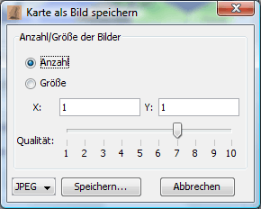

Mit dieser Funktion kann man die Karte als Bild abspeichern. Dabei wird der aktuelle Darstellungsmodus und die Zoomstufe wird dabei übernommen. In folgendem Dialog kann man den Bildexport anpassen:

Hier kann man die Anzahl der Dateien in x/y-Richtung bzw. die Größe des Bildes in Pixeln einstellen. Derzeit ist nur das Speichern im JPEG-Format möglich. Nach Klick auf "Speichern" kann man in einer Dateiauswahlbox den Dateinamen angeben.